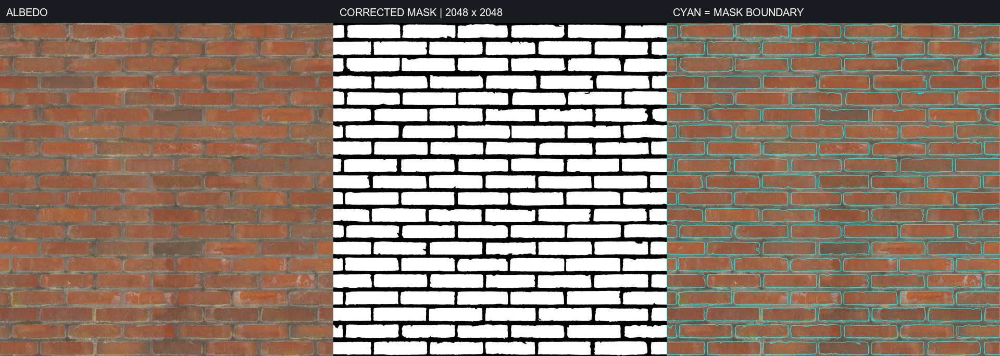

R01유지 · 코드 확인
2D 차집합 · 삼각분할 · 두께
구멍과 남는 벽의 기본 형상을 계속 담당합니다. Delaunay를 사용한다는 이유로 알고리즘을 교체하지 않습니다.
기준 외곽 · 내부 hole · 분리된 영역을 보존하고 닫힌 두께 메시를 생성.
2D 절단 기반은 유지합니다. 그 위에 재료별 파손, 노출된 단면, 표면 박리, 돌출 조각과 잔해를 만들고, 다음 타격에도 모든 요소가 같은 파괴 상태를 따르게 합니다.
VISUAL TARGET
사용자가 직접 촬영한 시즈 참고 화면입니다. 보이는 현상은 목표로 삼고, 공개되지 않은 내부 알고리즘은 단정하지 않습니다. 이미지를 누르면 원본 크기로 볼 수 있습니다.
SCOPE & OWNERSHIP
구멍과 남는 벽의 기본 형상을 계속 담당합니다. Delaunay를 사용한다는 이유로 알고리즘을 교체하지 않습니다.
공격·재료·표면 좌표를 함께 입력받고, 남는 표면·제거 영역·조각 윤곽·새 경계를 구분해 반환합니다.
석고의 불규칙한 탈락, 목재 판재와 결, 벽돌·줄눈 영역을 정의합니다. 벽돌 마스크의 벡터·ID 전처리와 부분 파손도 포함합니다.
타격 주변 피해, 영역 내구도, 판재 고정점과 연결 강도를 관리합니다. 현재의 외곽 접촉 판정을 확장합니다.
두께 방향을 가진 측면 UV, 표면·내부의 Material ID, 거친 단면과 박리 형상, 법선·탄젠트를 구성합니다.
균열·긁힘은 표면과 함께 자르고, 종이 박리·석고 조각·목재 가시는 해당 경계의 수명에 연결합니다.
윤곽과 두께가 맞는 큰 탈락 조각, 재료별 작은 파편·분진·그을음, 박리 메시와 내부 재질을 준비하고 연동합니다.
표면 상태가 파괴의 기준을 소유합니다. 계산을 완성한 뒤 메시·충돌·장식에 반영하고, 실패한 일부 영역이 사라지지 않도록 합니다.
정면 한 장 대신 근접·측면·반대편·연속 피격·재료별 비교를 남깁니다. 각 항목은 실제 Editor/PIE 증거로 확인합니다.
ONE DESTRUCTION EVENT
단계를 선택하면 같은 구멍 위에 어떤 결과가 추가되는지 비교할 수 있습니다. 재료와 공격을 바꿔도 공통 처리 흐름은 유지합니다.
개념도는 시각적 구성 요소를 설명합니다. 정확한 커터 클리핑·누적 피해·물리 낙하를 계산하는 게임 프로토타입은 아닙니다. 현재 C++ 비교에는 확인하지 않은 Blueprint 효과를 포함하지 않았습니다.
MATERIAL RESPONSE
불규칙한 외곽과 내부 분할. 표면 종이는 들뜨고, 심재는 잘게 부스러지며, 주변 균열이 남습니다.
필수: 종이 박리 · 심재 단면 · 돌출 조각 · 누적 탈락.
판자 경계를 보존하고 결을 따라 분할합니다. 일부 조각은 고정점에 붙어 남고, 날카로운 가시가 실루엣을 만듭니다.
필수: 판재 도안 · 결 방향 · 가시 · 고정점 연결.
벽돌별 탈락과 벽돌 자체의 부분 파손을 함께 다룹니다. 줄눈도 제거 영역에 포함하되 실제 테두리에는 모르타르 깨짐을 표현합니다.
필수: 벽돌 ID · 줄눈 배정 · 모서리 깨짐 · 내부 재질.
내부 분할은 계산용 2D 도안으로 시작할 수 있습니다. 모든 도안 셀을 처음부터 개별 3D 물리 객체로 만들 필요는 없습니다. 모양을 만드는 규칙과 떨어질 조건은 별도로 관리합니다.
피해 분포와 임계값은 관계를 설명하기 위한 임의의 교육용 설정입니다. 실제 시즈의 6발 규칙이나 물성값을 재현한 것이 아닙니다. 옅은 주황색은 누적 피해, 열린 초록색 영역은 추가 탈락입니다. 도식은 최대 12발까지 추가할 수 있으며, 이 예시와 별도로 지지 연결 손실도 판정해야 합니다.
MASK TO CUTTING CELLS
벽돌을 눌러 제거해 보세요. 왼쪽은 벽돌 면만 지우고, 오른쪽은 줄눈을 배정한 셀 전체를 지웁니다. 두 화면의 선택은 함께 움직입니다.
직사각형 셀로 단순화한 줄눈 배정 도식입니다. 실제 데이터는 보정 마스크에서 벽돌을 구분하고 반복 경계를 연결해 만듭니다. 줄눈의 중간선은 계산용 경계이며, 최종 비주얼에는 모르타르 파편과 모서리 깨짐을 더합니다.

PNG와 Unreal 임포트 원본의 픽셀 일치, 흑백 2색, 반대쪽 경계 샘플 일치는 확인했습니다. 원본 알베도 색상과 기존 초안의 내부 영역을 이용한 보정이며 수작업 정답 마스크는 아닙니다. 벡터 추출·줄눈 배정·실제 파괴 연결은 앞으로 구현할 범위입니다.
마스크 생성 기록 보기 ↗CROSS SECTION & SHADING
현재 측면 UV는 XZ만 사용합니다. 두께 Y가 달라도 같은 XZ를 가진 정점에는 같은 UV가 들어가므로, 측면의 면적이 UV에서 선으로 눌립니다.
앞면·뒷면·심재·목재 단면·모르타르를 구분합니다. 최초 메시 복사의 슬롯과 새 메시의 면별 할당을 연결해야 합니다.
종이 들뜸과 가시처럼 옆에서 보이는 요소는 입체 형상으로 만듭니다. 세부 균열 재질도 실제 구멍과 맞게 관리합니다.
노멀맵, 거친 단면, 표면의 조명 반응을 검증합니다. 평면 삼각분할선이 균열처럼 보이는 쉐이딩 오류를 막습니다.
DECORATION LIFECYCLE
Cut Decoration은 표면에 붙어 함께 잘리는 균열·표면 흔적입니다. Feature-bound Decoration은 경계·꼭짓점에 붙는 입체 장식이며 그 경계가 없어지면 제거하거나 재구성합니다. 도식은 SVG 마스크와 경계 샘플의 포함 판정으로 이 차이를 보여 줍니다.
TWO DIFFERENT LINES
조각 윤곽·내구도·연결·탈락 판정에 사용합니다. 현재 커터 결과에는 이 내부 조각 목록이 없습니다.
GPU에 그릴 면을 만드는 단계입니다. 삼각형 하나하나가 떨어지는 파편이라는 뜻은 아닙니다.
슬라이드 제목의 Intersection은 표면과 커터의 경계를 처리하는 문맥입니다. 벽에 구멍을 내고 남는 표면을 구하려면 차집합을 사용합니다. Ear Clipping과 Delaunay의 선택만으로 구현의 옳고 그름이 결정되지는 않습니다.
BUILD ORDER
아래는 개발 순서입니다. 뒤 단계의 비주얼을 선택 사항으로 미루는 목록이 아닙니다. 각 재료는 같은 완료 기준을 통과해야 합니다.
공격과 재료 규칙을 연결하고 남는 표면·제거 조각·새 경계를 구성합니다. 지지 연결과 실패 시 상태 보존을 함께 검증합니다.
표면과 내부의 재질을 구분하고 측면 UV, 거친 절단 형상, 법선·탄젠트를 바로잡습니다. 근접·측면 화면을 먼저 확인합니다.
표면 장식과 경계 장식을 추가하고, 재절단 때 잘림·제거·재구성이 동작하도록 만듭니다.
제거된 영역과 맞는 큰 조각, 작은 파편, 공격별 효과를 같은 파괴 이벤트의 위치와 타이밍에 연결합니다.
기존 구멍 겹침, 외곽 절단, 큰 탈락, 장식 수명, 반대편과 조명 반응을 검증합니다. 실제 Unreal 결과를 증거로 남깁니다.
목재 판재·결·고정점과 벽돌·줄눈·모서리 깨짐을 구현합니다. 공통 파괴 결과와 수명 관리를 재사용하되 재료별 형상은 유지합니다.
ACCEPTANCE GATES
체크는 이 브라우저에 저장됩니다. 실제 Editor/PIE 결과를 자동으로 판정하지 않습니다. 체크할 때 대응하는 캡처·로그·영상 증거를 별도로 남기세요.
EVIDENCE & LIMITS
코드와 기존 문서는 프로젝트 상대경로로 연결했습니다. 저장된 HTML을 직접 열면 해당 파일로 이동합니다. 이 문서 폴더만 제공하는 HTTP 미리보기에서는 폴더 밖의 프로젝트 링크를 제공하지 않습니다.
BreachableSurfaceComponent.cpp: 차집합·외곽 접촉 필터·삼각분할·돌출·UV·충돌 갱신. 측면 UV는 XZ를 사용하고 새 메시의 면별 내부 재질 구성은 추가가 필요합니다.
BreachSourceComponent.cpp / BreachShape.h: 현재 생성 결과는 외곽 다각형 하나이며 재료별 내부 조각 목록은 없습니다.
BreachSurfaceTypes.h: 현재 표면 상태는 치수와 RemainingRegions를 중심으로 구성돼 있습니다.
Julien L’Heureux · The Art of Destruction in Rainbow Six: Siege: 2D 절단, 커터 유형, 장식의 구분과 대체 잔해 등. 현재 게임 버전의 모든 내부 규칙을 확정하는 자료는 아닙니다.
Epic · Fracturing Geometry Collections: 사각형·원형의 결과만으로 2D와 사전 파쇄를 판별할 수 없다는 비교의 참고.
재료별 도안·줄눈 배정·누적 손상·연결 강도·단면 개선·장식·잔해·실패 시 일관성은 이 문서의 계획입니다. 이 HTML의 상호작용이 Unreal 구현 완료를 뜻하지 않습니다.
큰 조각과 실루엣의 품질을 유지하면서 아트 자산을 제작·선별합니다. 기존 자산 활용 여부는 목표 화면과의 시각적 일치로 판단합니다.
게임 참고 화면은 사용자가 제공했습니다. GDC 슬라이드와 게임 화면의 권리는 각 권리자에게 있습니다.